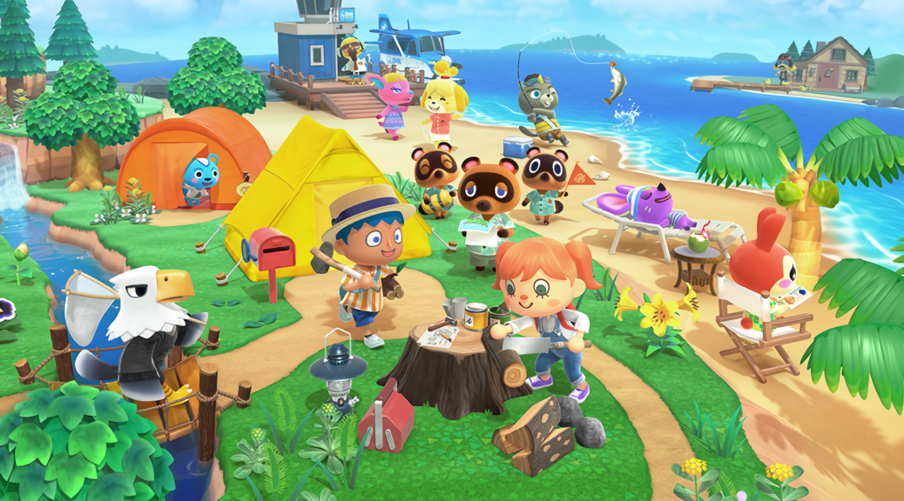

일단 배경을 설명하자면, 많은 팬들이 동물의 숲 신작에 대해 굉장히 목말라하고 있었다. 닌텐도 스위치는 슈퍼 스매시브라더스 얼티밋을 제외하면 꽤 오랫동안 킬러 퍼스트 파티 신작에 대한 정보가 부족한 상태였고 이런 상황을 뒤집을 카드로, 마침 플랫폼이 바뀌며 신작 발매 시기도 무르익었다고 보이는 동물의 숲이 주목받고 있는 상태였다. 그러나 E3 2018에서는 닌텐도 다이렉트의 대부분을 슈퍼 스매시브라더스 얼티밋에 할당하면서 동물의 숲 팬들의 비판이 쏟아졌고, 이에 레지널드 피서메이는 "팬들이 동물의 숲 신작을 원하는 것을 알고 있고, 닌텐도 스위치 신작의 동물의 숲에 대해 미리 발표해서 앞으로 수년간 사람들을 괴롭히는 것보다는 출시 날짜에 가까워지면 이야기를 나눌 것"이라고 해명을 하였다. 그런 상황에서 닌텐도 다이렉트 2018.9.14가 시작되었다. 요시 크래프트 월드를 비롯한 다른 게임들의 정보가 풀리며 닌텐도 다이렉트도 막바지에 이르는 찰나, 여울이 등장해서 동물의 숲 팬들을 설레게 했으나 여울이 슈퍼 스매시브라더스 얼티밋에 참전한다는 내용일 뿐이었다. 그러나 이후 갑자기 너굴이 사무실에서 여울의 참전 영상을 보는 장면으로 전환된다. 너굴은 캠핑과 대난투를 하면서 지친 동료들이 돌아왔을 때 충분히 쉴 수 있도록 새로운 생활 플랜을 준비해야 한다고 말하며 종이에다 무언가를 쓰는데... 그 뒤 동물의 숲 닌텐도 스위치 버전이 2019년에 출시 예정이라는 사진 단 한 장을 보여주면서 닌텐도 다이렉트가 막을 내렸다. 마지막에 공개된 저 로고 하나가 다시 없을 엄청난 반응을 끌어냈다.